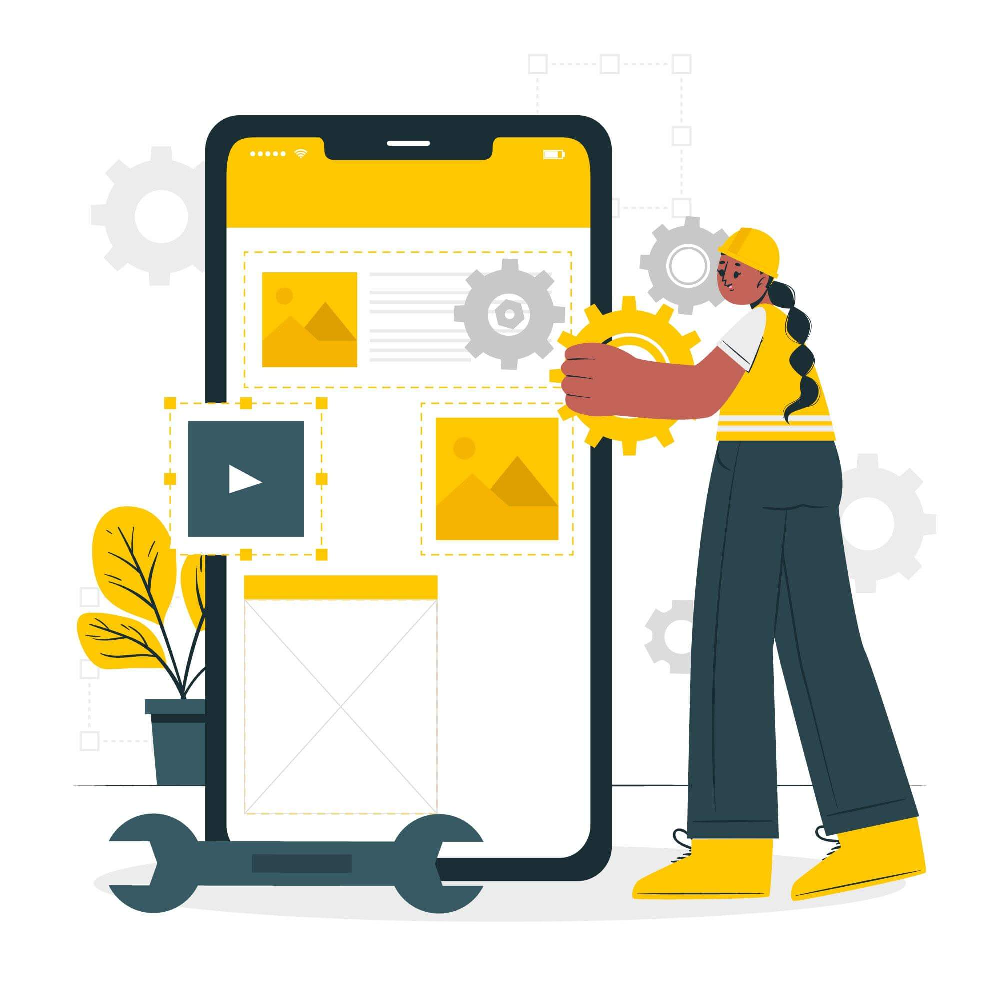
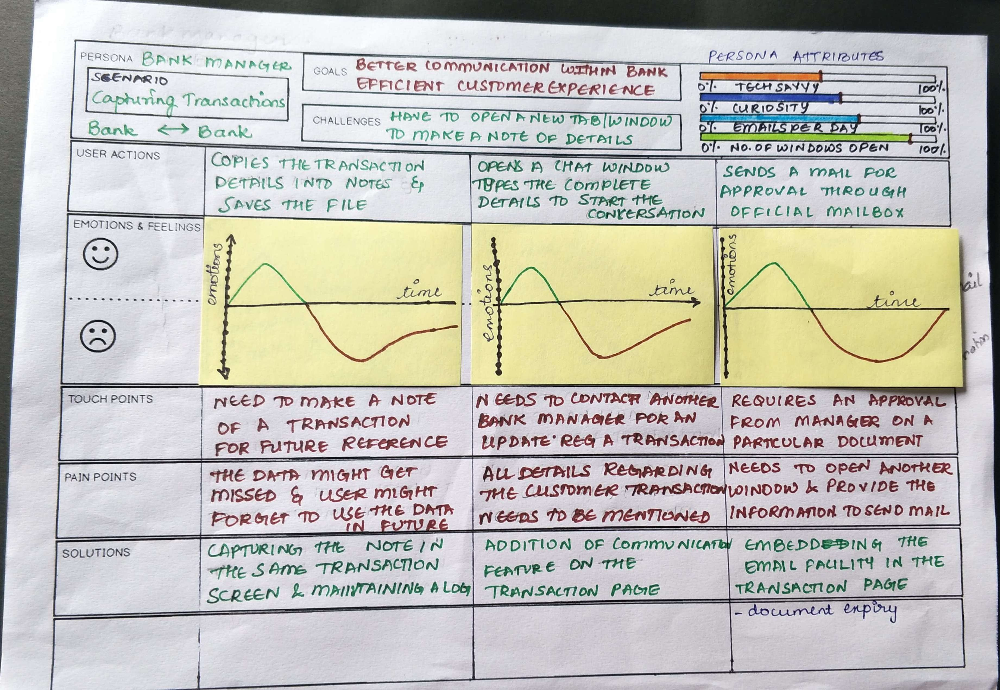

Introduction
Our team partnered with a leading financial institution to design a seamless DIY loan application journey, enabling customers to independently complete the process while addressing both their functional and emotional needs. The objective was to enhance customer autonomy while maintaining a high level of usability and trust.
To achieve this, we conducted a comparative analysis of three distinct loan application models:
- DIY (Self-Service): A fully digital, self-guided application process.
- Assisted (Hybrid): Support agent intervention when needed.
- Manual (Traditional): In-person, paper-based applications.
By evaluating these models, we identified key opportunities to streamline the user experience, reduce friction points, and drive higher conversion rates, ultimately positioning the institution as a leader in digital lending.
Project Duration
- 4 Months - Design & Development
- 1 Month - Bot Design
Role
- Product Design
- Interaction Design
- User Research
- Usability Testing
Design Tools
- Figma
- Balsamiq
Deliverables
- Initial Mockups
- High-Fidelity Wireframes
- User Journey Mapping
- Persona Chart
This case study is part of our broader exploration of AI-driven solutions for the financial sector, as detailed in the Chatbot UX Case Study. Insights from that study played a key role in shaping our approach to enhancing user interactions within the DIY loan journey.

Problem Statement
Traditional loan application processes are often cumbersome, requiring extensive paperwork, multiple touchpoints, and long wait times. Customers frequently experience confusion and frustration due to complex requirements, lack of transparency, and dependency on support agents or in-person visits.
To address these challenges, the financial institution sought to streamline the process by introducing a DIY loan application journey that would empower users to complete their applications independently. However, balancing user autonomy, guidance, and trust was critical.
We explored three distinct models to identify the most efficient and user-friendly approach while ensuring accessibility and confidence at every stage:
- Manual Journey: Traditional in-person applications guided by loan officers.
- Assisted Journey: A support-guided process with agent intervention as needed.
- DIY Journey: A fully self-service model allowing users to apply independently.
Manual Journey

The Manual Journey follows a traditional, face-to-face process where loan officers guide users through each step. While it provides human interaction and trust, it is often seen as time-consuming, inconvenient, and less efficient. Long wait times and the perceived lack of control make this model less favorable compared to the DIY or Assisted Journeys.
Assisted Journey

The Assisted Journey offers users guidance from a support agent who helps them through the process. While this provides reassurance, it can introduce delays due to the dependency on an available agent. Users still retain some control over their application, but waiting times and occasional loss of control can cause frustration. This model strikes a middle ground, offering assistance but at the cost of flexibility.
DIY Journey
In the DIY journey, users interact with the platform independently, making all decisions and filling in forms on their own. This model is the most efficient and empowering for users, offering autonomy and convenience. Users can progress at their own pace, minimizing wait times and maintaining full control of the loan process. It empowers users to complete each step without external assistance.
Loan Process Steps
- Authentication: Verifying the user's identity through secure methods.
- Eligibility Criteria: Ensuring the user meets the requirements for the loan.
- Documentation: Collecting required documents such as proof of income and identity.
- Application Form: Completing the loan application form with personal and financial information.
- Loan Disbursement: Once approved, the loan amount is disbursed to the user’s account.
Understanding Our Users: Personas
To empathize with our users and tailor the design to their needs, we created two key personas: the Customer and the Bank Manager. Each persona represents a distinct user group with unique goals, challenges, and pain points.
Customer Persona

Persona 1: Priya, the Loan Applicant (Customer)
Based on our research, including interviews, surveys, and usability tests, we developed a user persona for Priya, a 32-year-old professional from Bengaluru. Priya is tech-savvy and prefers managing her tasks online, especially when balancing work and family. She aims to complete her loan application smoothly and stay updated on its progress. Priya’s pain points include unclear application status, uncertainty about document submission, and excessive follow-ups. This persona helped us design an experience that prioritizes efficiency, clear communication, and a smooth, hassle-free process for loan applicants.

Bank Manager Persona
Persona 2: Amit, the Bank Manager
Our research also led to the creation of Amit’s persona, a 43-year-old senior bank manager from Mumbai with over 15 years of experience. Amit oversees loan approvals and manages customer communication. His motivations include streamlining customer interactions and reducing repetitive tasks. Amit's challenges include juggling multiple systems and tabs, which leads to inefficiency. He values tools that enhance collaboration and speed up approvals. By understanding Amit’s frustrations and goals, we could ensure that our design would improve his workflow, communication, and overall efficiency in managing loan requests and customer interactions.
Information Architecture & Flow Design
Based on insights from user research, we developed an intuitive flow for the DIY journey. The key was to simplify complex forms and provide contextual assistance without overwhelming the user.
- Step-by-Step Process: A clear, linear process with progress indicators to reduce anxiety.
- Dynamic Forms: Forms adapted to the user’s selections, minimizing cognitive load and making the experience feel more tailored.
- Interactive Help: Embedded tooltips and microcopy to explain terms and guide users through complex sections.
User Interface Design
We focused on a minimalist UI to avoid cognitive overload. Key elements included:
- Visual Cues: Clear call-to-action buttons and color-coding to distinguish between sections.
- Responsive Design: Optimized for both desktop and mobile devices, ensuring a seamless experience across platforms.
- Error Prevention: Inline validation to prevent users from submitting incomplete or incorrect information.
Emotional Support Elements
To address the emotional concerns identified in research, we integrated features that offered reassurance and guidance:
- Confidence Building: Positive reinforcement messages at each step (e.g., "You're doing great!") to reduce anxiety.
- Chatbot Integration: A chatbot available throughout the journey for immediate support, offering personalized guidance and answering questions in real-time.
- Help Center: Links to FAQs and video tutorials for users who preferred self-service over live chat.
Challenges & Solutions
Challenge 1: Managing User Anxiety
Solution: Tooltips and contextual help were added, ensuring users always felt supported without needing to leave the DIY journey. Users could easily switch to live assistance if they felt lost.
Challenge 2: Balancing Automation with Human Support
Solution: A hybrid model was implemented, where users could choose to interact with a chatbot or agent when needed, ensuring they never felt stranded. Emotional touchpoints guided users in their decision-making process.
Results & Impact
The launch of the DIY loan journey resulted in:
- Increased Conversion Rates: A significant increase in loan applications through the DIY platform, with a noticeable decrease in abandonment rates compared to the Assisted and Manual models.
- Higher User Satisfaction: Post-launch surveys showed a 25% improvement in user satisfaction, with many users expressing appreciation for the ability to control their loan application process.
- Emotional Engagement: Emotional journey mapping showed that users felt more empowered and less anxious with the new DIY process compared to traditional methods.
Conclusion
The DIY loan journey successfully addressed the needs of users who preferred autonomy while providing reassurance and emotional support when needed. The hybrid approach, with a chatbot option, significantly enhanced the experience by allowing users to switch between self-service and support based on their comfort level.
This case study is a precursor to the can be found here: Chatbot UX Case Study, where we explore how AI-driven solutions further enhanced customer interactions within the financial services domain, leading to even more personalized and efficient user journeys.